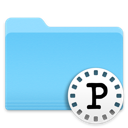

MacOS Application

Pretend Assistant iOS Mockups
Continued
Pretend has an iOS helper called Pretend Assistant. I was heavily involved in the design of the application, generation of assets and layout utilizing Sketch and Xcode.
Logo
Continued
Pretend integrates screenwriting and movie making tools so I based the logo design on an old typewriter key surrounded by stylized film sprockets (perforations).
MacOS Integrated Icons
|  | ||||||
I included a suite of MacOS styled icons to better integrate Pretend with Apple’s Finder and variations for different media including print.